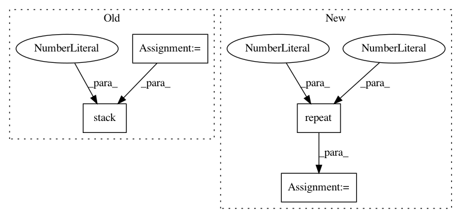

67addeaef37856340f2d220af9a7cad3c4256235,visdialch/decoders/disc.py,DiscriminativeDecoder,forward,#DiscriminativeDecoder#Any#Any#,22
Before Change
enc_out = enc_out.view(batch_size * num_rounds, -1)
// score each option
scores = []
for opt_id in range(num_options):
opt = options[:, opt_id, :, :]
opt_len = options_len[:, opt_id]
opt_embed = self.option_rnn(opt, opt_len)
scores.append(torch.sum(opt_embed * enc_out, 1))
// return scores
return torch.stack(scores, 1)
After Change
// repeat encoder output for every option
// shape: (batch_size, num_rounds, num_options, max_sequence_length)
encoder_output = encoder_output.unsqueeze(2).repeat(1, 1, num_options, 1)
// shape now same as `options`, can calculate dot product similarity
// shape: (batch_size * num_rounds * num_options, lstm_hidden_state)
encoder_output = encoder_output.view(
batch_size * num_rounds * num_options, self.config["lstm_hidden_size"]
)
// shape: (batch_size * num_rounds * num_options)
scores = torch.sum(options_embed * encoder_output, 1)
// shape: (batch_size, num_rounds, num_options)
In pattern: SUPERPATTERN
Frequency: 3
Non-data size: 4
Instances
Project Name: batra-mlp-lab/visdial-challenge-starter-pytorch
Commit Name: 67addeaef37856340f2d220af9a7cad3c4256235
Time: 2019-01-03
Author: karandesai281196@gmail.com
File Name: visdialch/decoders/disc.py
Class Name: DiscriminativeDecoder
Method Name: forward
Project Name: AIRLab-POLIMI/mushroom
Commit Name: 9ddaacb9e73ac061c08403e16ac1a4d5364dca9b
Time: 2021-02-10
Author: carlo.deramo@gmail.com
File Name: mushroom_rl/algorithms/value/dqn/rainbow.py
Class Name: RainbowNetwork
Method Name: forward
Project Name: arraiy/torchgeometry
Commit Name: e18e682858c57124d46c40e8ab1d136c009a1f69
Time: 2020-10-06
Author: daniel.koguciuk@gmail.com
File Name: kornia/geometry/homography.py
Class Name:
Method Name: find_homography_dlt